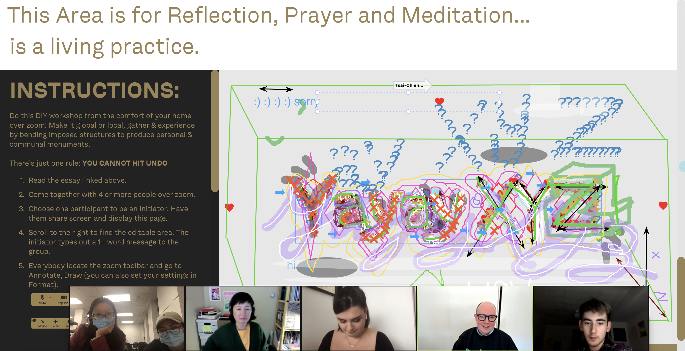
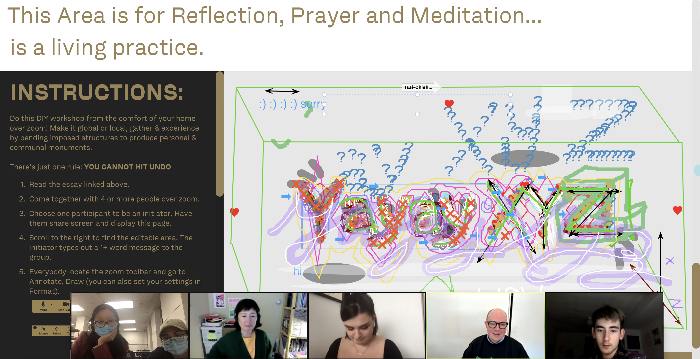

FULL WORK INDEX
-
WORK TITLE FORM:
-
1: PBPOMFFLIPBOOK
A hand drawn frame-by-frame flipbook animation exploring the commute as an allegory for growing up and moving between many different places while watching time and space pass by in a blur and seeing different elements come and mold together in the scenery.


-
2: TRAILERVIDEO
A frame by frame animation, with each window displaying a new perspective and framing device that when looked at as a contact sheet becomes a larger whole.
-
3/4: GOING HOME TOGETHERPUBLICATION
asdfasdfadsf


-
5/6: THIS AREA IS FOR REFLECTION, PRAYER & MEDITATIONWRITING, RESEARCH & INSTALLATION
An installation, publication and workshop that act as an ode to how within a letterform a colonized country found a space to reinvent, re-examine, and reflect. Within the letterform they found markings that strengthen their communities in the face of oppressive systems.
 



-
7: RE(ACT) COVERPART OF (WORK)BOOK
asdfasdfadsf
-
8: CONVERSATION W. SHIRAZ GALLABPART OF (WORK)BOOK
A conversation with designer, publisher and educator Shiraz Gallab on her practice, background and thoughts on the field. Transcript included within Re(ACT) (work)book. April 21 2021, 5:00 PM EST.
Shiraz is a des
-
9: CONVERSATION W. KRISTIAN HENSONPART OF (WORK)BOOK
A conversation with designer and publisher Kristian Henson on his practice, background and thoughts on the field. Transcript included within Re(ACT) (work)book. April 19 2021, 9:00 PM PHST.
Kristian is part of the collective Hardworking Goodlooking alongside holding his own design practice.
-
10: THE PROCESSING UNITDIAGRAM
asdfasdfadsf
-
11/12: BARANGAYTYPEFACES, INSTALLATION & WRITING
A barangay is the Filipino equivalent of a village. If it takes a village to raise a child then the many stories of our past also become families in a village that shapes us. In Barangay multiple typographic families are grown out of my intertwining narratives and they come together to tell the story of my upbringing as a Filipino-Chinese third culture kid.


-
13: CONVERSATION W. JAMES EDMONDSONPART OF (WORK)BOOK
A conversation with type designer James Edmondson on his practice, background and thoughts on the field. Transcript included within Re(ACT) (work)book. April 13 2021, 9:00 AM PST.
James founded OH no Type Co. in 2015 and co-founded Future Fonts in 2018. He is currently based in Oakland, California.
-
14/15: I LOOK OUT A WINDOW & I DREAMTYPEFACE & STENCILS
asdfasdfadsf
-
16/17: WINDERTYPEFACE & WEBSITE
Winder is a variable typeface that is loosely inspired by the relativity of body and space to create flow in Feng Shui. Winder’s forms were drawn thinking of the flow of space and how the texture of the typographic form can represent it. The variability allows for the flux and change of space that occurs within the concepts of Feng Shui.
-
18: MIMICRY & MOCKERYRUG
asdfasdfadsf
-
19: THE SMALLEST UNITCOLLABORATIVE PUBLISHING WEBSITE
The idea of hyperlocality is no longer bound to a singular space or time, rather it exists within the many connections we hold with one another and the means in which we function within these connections.
The Smallest Unit is a delineated publishing space for those that live within the diasporic cultures and living within the fringes to explore, build upon and finally publish their network of world and histories to the exterior world. It asks for people to provide cultural personal perspectives on the “smallest” unit of their practices/livelihoods.
-
20: STRUCTURES OF RELINQUISHING CONTROLDIAGRAM
asdfasdfadsf
-
21/22: RE(ACT)(WORK)BOOK
asdfasdfadsf

-
23/24: THIS IS A CRITIQUEINSTALLATION, WEBSITE & ZINE
This Is a Critique is a move to confront the eurocentric, male- centered critique culture and erasure of women of color (WOC) in the Graphic Design department at RISD. It is an installation and publication located in the main hallway entrance of the Design Center from May 10–May 23 2021. The installation acts as a space for the voices of WOC to freely speak in an institution where we have traditionally been erased or silenced. It acts to highlight and reveal the structures at play to those who are and have been complicit.
-
25: RE(ACT)WEBSITE & PRESENTATION
asdfasdfadsf
 From my camera roll. 2017.
From my camera roll. 2017.
 An ideal conceptual and topographic landscape of feng shui in Feng Shui: The Living Earth Manual by S Skinner. 2011.
An ideal conceptual and topographic landscape of feng shui in Feng Shui: The Living Earth Manual by S Skinner. 2011.